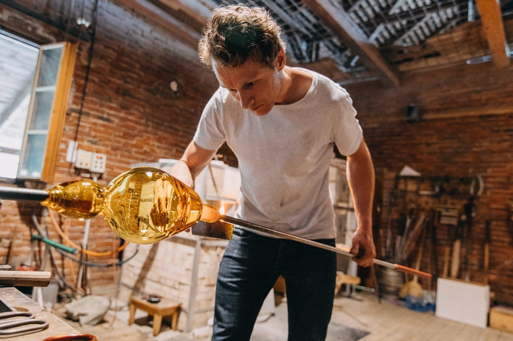
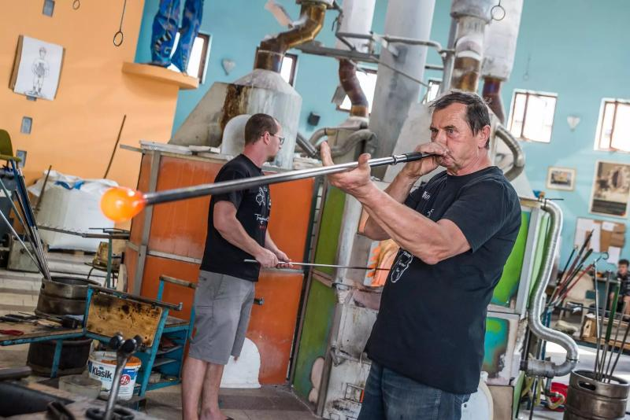
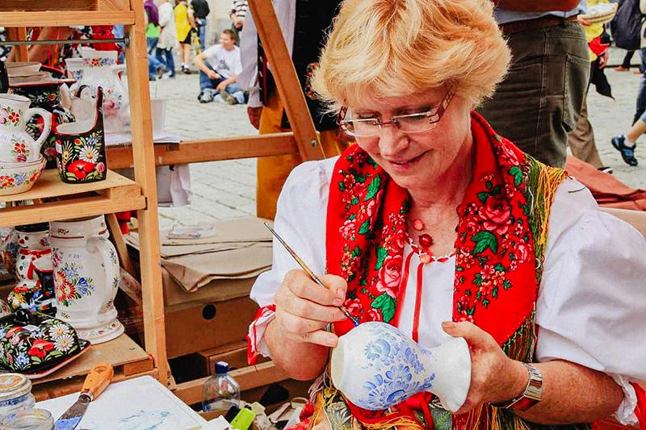
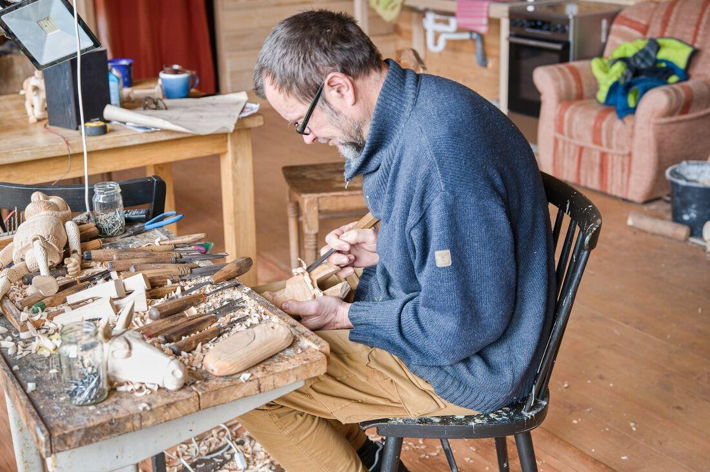
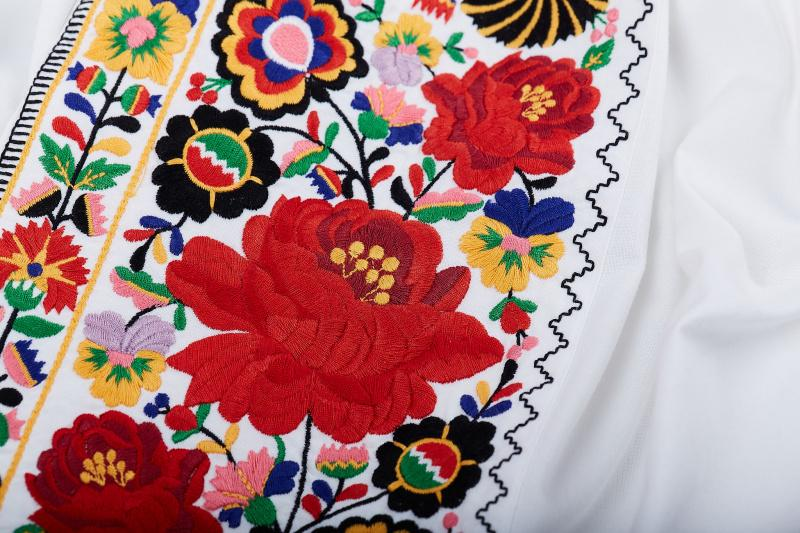
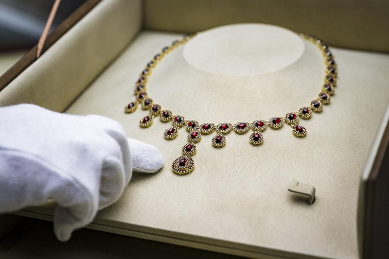
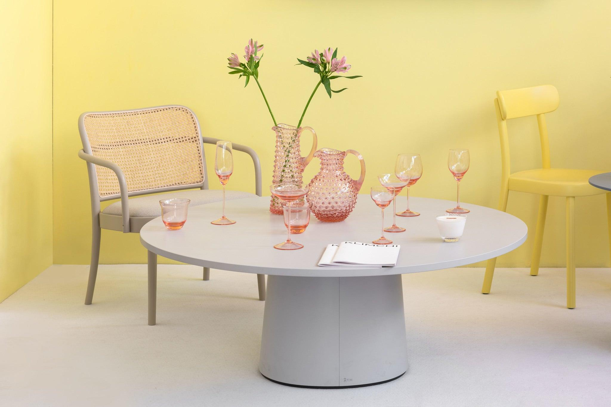

Czech Glassmaking
Bohemian glass and crystal are famous for their quality and beauty. Traditional glassmakers use skilled techniques such as glassblowing, cutting and engraving to create unique pieces.

Discover the traditional skills, handmade products and creative design that are part of Czechia's cultural heritage.
Czechia has a long tradition of craftsmanship, with skills passed down through generations. From delicate Bohemian glass and handmade ceramics to wooden objects and detailed embroidery, traditional crafts remain an important part of Czech culture. Today, Czech artisans combine these techniques with modern ideas to create unique products and designs.
Explore the materials, techniques and creative traditions that make Czech craftsmanship special. Each craft tells a story about the country's history, regional identity and artistic talent.

Bohemian glass and crystal are famous for their quality and beauty. Traditional glassmakers use skilled techniques such as glassblowing, cutting and engraving to create unique pieces.

Czech ceramics include handmade pottery, decorative plates and beautifully painted products. Many pieces reflect local traditions and the creativity of skilled craftspeople.

Woodworking has a long history in Czechia. Artisans create carved decorations, wooden toys, furniture and practical objects using traditional skills and natural materials.

Traditional Czech textiles are known for their detailed embroidery, lace and decorative patterns. These techniques have been used to create clothing, folk costumes and handmade decorations for generations.

Czech jewellery is famous for its use of Bohemian garnets, glass beads and carefully crafted details. These materials have inspired beautiful accessories and decorative pieces for centuries.

Contemporary Czech designers combine traditional craftsmanship with modern materials and ideas. Their work includes furniture, lighting, glass products and innovative everyday objects.
Traditional crafts are an important part of Czech cultural heritage. By preserving old techniques while exploring new ideas, Czech artisans and designers keep these skills alive and bring them into modern life. Their work shows how creativity and tradition can come together.